| Задание N1 | ||||||||
| Копирование с прозрачным цветом | ||||||||
| Дано: Две прямоугольные области с размером элемента один байт.
|
||||||||
| Необходимо: Реализовать на ассемблере функцию копирования части одной прямоугольной области из ее начала в начало другой прямоугольной области, как показано на рисунке ниже, при этом копируются все, кроме нулевых байтов. |
||||||||
 |
||||||||
| Написать декларацию данной функции на C, а также ее реализацию на C и на ассемблере i80486+, учитывая, что данная функция будет выполняться в 32bit flat модели. Наибольшее внимание следует уделить быстродействию. Ассемблерная реализация функции пишется исходя из предположения, что параметры для нее будут переданы в тех регистрах, в каких ей это необходимо. Применение самомодифицирующего кода допускается. | ||||||||
| Дополнительное
необязательное задание: Написать данную функцию используя самомодифицирующийся код, при этом функция должна быть реэнтерабельной. |
||||||||
|
|
||||||||
Text and images are (c) 1997 by Snowball Interactive Entertainment, Inc. All rights reserved. |